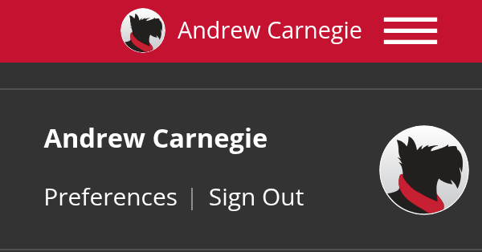

Images and Icons
Images and icons for live sites and apps as well as mockups. Link to them straight from your pages; the addresses won't change.
Sample ID Card
A sample CMU ID for Andrew Carnegie, for ID tap screens and mockups.
https://placemellon.andrew.cmu.edu/images/cmu-id-card.svgBio Placeholder
The gray wordmark placeholder staff pages use for a person without a photo, at the same 600 × 750.
https://placemellon.andrew.cmu.edu/600/750?bio
Default Profile Picture
Scotty as the signed-in user's picture when they don't have a photo, in the kit's profile picture: for the one account on the page, not lists of people. Use this one address for both sizes, small in the roof and larger in the menu: it's drawn, so it stays sharp, and it loads once.
https://placemellon.andrew.cmu.edu/112?profileFavicon
A favicon is the small icon a browser shows beside a page's title: in the tab, in bookmarks and in history. Phones use a larger one when someone adds the page to their home screen, and older versions of Windows use the tile color and image for a pinned site.
-
In a browser tab (favicon.ico)
-
 On a phone's home screen (favicon-152.png)
On a phone's home screen (favicon-152.png)
To use CMU's favicon, link to the files on cmu.edu from your page's head:
<link href="https://www.cmu.edu/favicon.ico" rel="icon">
<link href="https://www.cmu.edu/favicon-152.png" rel="apple-touch-icon-precomposed">
<meta content="#9f0000" name="msapplication-TileColor">
<meta content="https://www.cmu.edu/favicon-144.png" name="msapplication-TileImage">More From University Communications and Marketing
CMU's brand site has the official wordmarks, Scotty illustrations and tartan patterns, with how to use them: